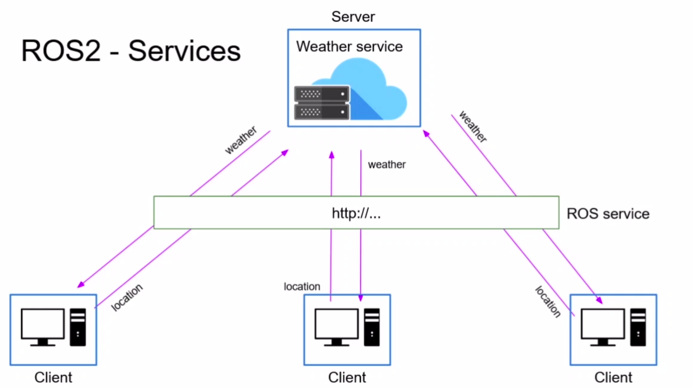
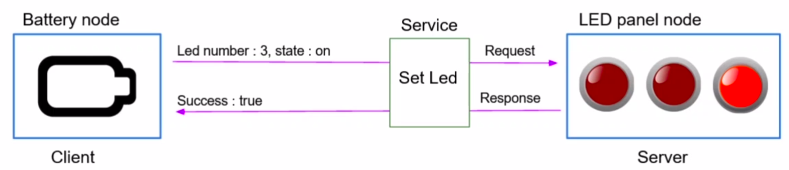
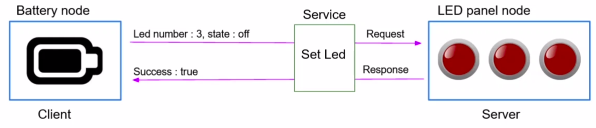
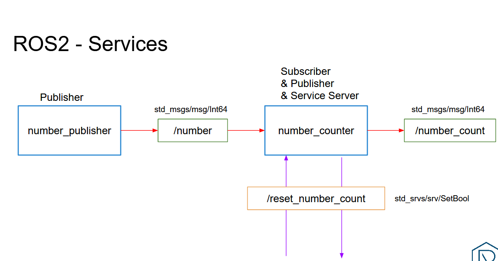

ros2 service call.create_client(Type, "name")---return responsecall_async + add_done_callback| Time | Activity | Type |
|---|---|---|
| 0:00–0:10 | Warm-up + run everyone's number counter | Check |
| 0:10–0:30 | Help-desk analogy, topic vs service table | Teach |
| 0:30–0:55 | Lab 1 — clear / spawn / kill / set_pen from the terminal | Do |
| 0:55–1:20 | Lab 2 — AddTwoInts server, called from the terminal | Do |
| 1:20–1:30 | Break | |
| 1:30–2:10 | Lab 3 — client (simple, then OOP with a callback) + Lab 4 | Do |
| 2:10–2:50 | Activity 4.1 — reset_counter service | Do |
| 2:50–3:00 | Exit ticket + homework | Check |
Teaching tip. The client is the hardest part today. Draw the timeline on the board: "send request → keep spinning → answer arrives → callback runs". Show that a "blocking wait inside a callback" freezes the node; this is the number-one bug students hit in Lecture 7.
Write the command to publish {data: 5} on /number once per second.
ros2 topic pub -r 1 /number example_interfaces/msg/Int64 "{data: 5}"In the number counter, where did we publish: in a timer or in a subscriber callback?
Your counter is at 1,000,000. How could another node ask it to go back to 0?
A service is like a help desk. You walk up (you are the client), ask one question (the request), and the person behind the desk (the server) gives you one answer (the response). There is one desk, but many people can come and ask.
.srv type separated by ---.| Topic 📻 | Service 🛎️ | |
|---|---|---|
| Direction | One-way | Request → Response |
| How many | Many publishers, many subscribers | One server, many clients |
| Use for | Continuous data: sensors, pose, velocity | One-off actions and questions: reset, spawn, compute, switch mode |
| Robot example | /scan, /odom, /cmd_vel | "Save the map", "Reset odometry", "Turn the LED on" |



---, then response fields.partial(f, a=a).Goal: find a service, read its type, and call it from the terminal.
ros2 run turtlesim turtlesim_node
ros2 run turtlesim turtle_teleop_keyros2 service list/clear /kill /reset /spawn /turtle1/set_pen /turtle1/teleport_absolute /turtle1/teleport_relative
Drive a bit so there is a line, then:
ros2 service type /clear
ros2 interface show std_srvs/srv/Empty
ros2 service call /clear std_srvs/srv/EmptyEmpty has nothing above or below the ---, so there's nothing to send and nothing comes back. The lines disappear.
ros2 interface show turtlesim/srv/Spawn
ros2 service call /spawn turtlesim/srv/Spawn "{x: 5.0, y: 5.0, theta: 0.0, name: 'my_turtle'}"float32 x float32 y float32 theta string name # Optional. A unique name will be created and returned if this is empty --- string name requester: making request: turtlesim.srv.Spawn_Request(x=5.0, y=5.0, theta=0.0, name='my_turtle') response: turtlesim.srv.Spawn_Response(name='my_turtle')
Above --- is the request, and below it is the response.
ros2 service call /turtle1/set_pen turtlesim/srv/SetPen "{r: 255, g: 0, b: 0, width: 5, 'off': 0}"
ros2 service call /kill turtlesim/srv/Kill "{name: 'my_turtle'}"Drive turtle1: its line is now thick and red. my_turtle is gone. ('off' is in quotes because off is a special word in YAML.)
Goal: a node that offers /add_two_ints, receives a and b, and returns their sum.
ros2 interface show example_interfaces/srv/AddTwoIntsint64 a int64 b --- int64 sum
cd ~/ros2_ws/src/my_py_pkg/my_py_pkg
touch add_two_ints_server.py && chmod +x add_two_ints_server.py#!/usr/bin/env python3
import rclpy
from rclpy.node import Node
from example_interfaces.srv import AddTwoInts
class AddTwoIntsServerNode(Node):
def __init__(self):
super().__init__("add_two_ints_server")
self.server_ = self.create_service(
AddTwoInts, "add_two_ints", self.callback_add_two_ints)
self.get_logger().info("Add two ints server has been started")
def callback_add_two_ints(self, request, response):
response.sum = request.a + request.b
self.get_logger().info(f"{request.a} + {request.b} = {response.sum}")
return response
def main(args=None):
rclpy.init(args=args)
node = AddTwoIntsServerNode()
rclpy.spin(node)
rclpy.shutdown()
if __name__ == "__main__":
main()The server callback receives the request and an empty response. You fill the response and return it. If you forget the return, the client never gets an answer.
"add_two_ints_server = my_py_pkg.add_two_ints_server:main",cd ~/ros2_ws && colcon build --packages-select my_py_pkg --symlink-install && source ~/.bashrc
ros2 run my_py_pkg add_two_ints_serverros2 service list
ros2 service call /add_two_ints example_interfaces/srv/AddTwoInts "{a: 3, b: 4}"response: example_interfaces.srv.AddTwoInts_Response(sum=7)
Goal: first a simple client script, then the OOP client you will use inside real robot nodes.
#!/usr/bin/env python3
import rclpy
from rclpy.node import Node
from example_interfaces.srv import AddTwoInts
def main(args=None):
rclpy.init(args=args)
node = Node("add_two_ints_no_oop")
client = node.create_client(AddTwoInts, "add_two_ints") # 1. make a client
while not client.wait_for_service(1.0): # 2. wait for the server
node.get_logger().warn("Waiting for server add_two_ints...")
request = AddTwoInts.Request() # 3. fill a request
request.a = 3
request.b = 8
future = client.call_async(request) # 4. send it
rclpy.spin_until_future_complete(node, future) # 5. wait for the answer
response = future.result()
node.get_logger().info(f"{request.a} + {request.b} = {response.sum}")
rclpy.shutdown()
if __name__ == "__main__":
main()# setup.py: "add_two_ints_client_no_oop = my_py_pkg.add_two_ints_client_no_oop:main",
cd ~/ros2_ws && colcon build --packages-select my_py_pkg --symlink-install && source ~/.bashrc
ros2 run my_py_pkg add_two_ints_client_no_oop[INFO] [...] [add_two_ints_no_oop]: 3 + 8 = 11
Try it the other way round: start the client first. It prints "Waiting for server…" until you start the server.
Inside a real node we must never block, because the node also has to handle its timers and subscribers. So we send the request and ask ROS 2 to call us back when the answer arrives.
#!/usr/bin/env python3
from functools import partial
import rclpy
from rclpy.node import Node
from example_interfaces.srv import AddTwoInts
class AddTwoIntsClientNode(Node):
def __init__(self):
super().__init__("add_two_ints_client")
self.client_ = self.create_client(AddTwoInts, "add_two_ints")
self.call_add_two_ints_server(6, 6)
self.call_add_two_ints_server(7, 4)
self.call_add_two_ints_server(5, 4)
def call_add_two_ints_server(self, a, b):
while not self.client_.wait_for_service(1.0):
self.get_logger().warn("Waiting for server add_two_ints...")
request = AddTwoInts.Request()
request.a = a
request.b = b
future = self.client_.call_async(request)
future.add_done_callback(partial(self.callback_call_add_two_ints, a=a, b=b))
def callback_call_add_two_ints(self, future, a, b):
try:
response = future.result()
self.get_logger().info(f"{a} + {b} = {response.sum}")
except Exception as e:
self.get_logger().error(f"Service call failed {e!r}")
def main(args=None):
rclpy.init(args=args)
node = AddTwoIntsClientNode()
rclpy.spin(node)
rclpy.shutdown()
if __name__ == "__main__":
main()# setup.py: "add_two_ints_client = my_py_pkg.add_two_ints_client:main",
cd ~/ros2_ws && colcon build --packages-select my_py_pkg --symlink-install && source ~/.bashrc
ros2 run my_py_pkg add_two_ints_client[INFO] [...] [add_two_ints_client]: 6 + 6 = 12 [INFO] [...] [add_two_ints_client]: 7 + 4 = 11 [INFO] [...] [add_two_ints_client]: 5 + 4 = 9
partial?add_done_callback always calls your function with just one argument, the future. But we also want to print a and b. partial(f, a=a, b=b) makes a new function with a and b already filled in. Remember this pattern: you will use it for every service call in Lecture 7.
#include "rclcpp/rclcpp.hpp"
#include "example_interfaces/srv/add_two_ints.hpp"
using std::placeholders::_1;
using std::placeholders::_2;
class AddTwoIntsServerNode : public rclcpp::Node
{
public:
AddTwoIntsServerNode() : Node("add_two_ints_server")
{
server_ = this->create_service<example_interfaces::srv::AddTwoInts>(
"add_two_ints", std::bind(&AddTwoIntsServerNode::callbackAddTwoInts, this, _1, _2));
RCLCPP_INFO(this->get_logger(), "Service server has been started.");
}
private:
void callbackAddTwoInts(const example_interfaces::srv::AddTwoInts::Request::SharedPtr request,
const example_interfaces::srv::AddTwoInts::Response::SharedPtr response)
{
response->sum = request->a + request->b;
RCLCPP_INFO(this->get_logger(), "%ld + %ld = %ld", request->a, request->b, response->sum);
}
rclcpp::Service<example_interfaces::srv::AddTwoInts>::SharedPtr server_;
};
int main(int argc, char **argv)
{
rclcpp::init(argc, argv);
rclcpp::spin(std::make_shared<AddTwoIntsServerNode>());
rclcpp::shutdown();
return 0;
}CMakeLists: add_executable(add_two_ints_server src/add_two_ints_server.cpp), ament_target_dependencies(add_two_ints_server rclcpp example_interfaces) and add it to install(TARGETS …). The Python client works with the C++ server.
ros2 service type /add_two_ints
ros2 node info /add_two_ints_server
rqtIn rqt: Plugins → Services → Service Caller, choose /add_two_ints, type values into the table and click Call.
ros2 run my_py_pkg add_two_ints_server --ros-args -r add_two_ints:=calculator
ros2 run my_py_pkg add_two_ints_client --ros-args -r add_two_ints:=calculatorIt's the same -r as for topics. If you remap only the client, it waits forever. Try it!

Add a service server to your number_counter node from Lecture 3:
/reset_counter. Type: example_interfaces/srv/SetBool (use ros2 interface show to see what's inside).data is true: set the counter to 0 and return success = True with a message.false: do nothing and return success = False.Test with publisher, counter and ros2 topic echo /number_count running:
ros2 service call /reset_counter example_interfaces/srv/SetBool "{data: true}"SetBool: request bool data; response bool success, string message. You only need to add 1 import, 1 create_service line and 1 callback.#!/usr/bin/env python3
import rclpy
from rclpy.node import Node
from example_interfaces.msg import Int64
from example_interfaces.srv import SetBool
class NumberCounterNode(Node):
def __init__(self):
super().__init__("number_counter")
self.counter_ = 0
self.number_count_publisher_ = self.create_publisher(Int64, "number_count", 10)
self.number_subscriber_ = self.create_subscription(
Int64, "number", self.callback_number, 10)
self.reset_counter_service_ = self.create_service(
SetBool, "reset_counter", self.callback_reset_counter)
self.get_logger().info("Number Counter has been started")
def callback_number(self, msg):
self.counter_ += msg.data
new_msg = Int64()
new_msg.data = self.counter_
self.number_count_publisher_.publish(new_msg)
def callback_reset_counter(self, request, response):
if request.data:
self.counter_ = 0
response.success = True
response.message = "Counter has been reset"
else:
response.success = False
response.message = "Counter has not been reset"
return response
def main(args=None):
rclpy.init(args=args)
node = NumberCounterNode()
rclpy.spin(node)
rclpy.shutdown()
if __name__ == "__main__":
main()Write a client node turtle_army.py that calls turtlesim's /spawn service 5 times to put turtles in a row at y = 2.0 and x = 1, 3, 5, 7, 9, named soldier1…soldier5. Log the name returned by each response. Add <depend>turtlesim</depend> to package.xml.
#!/usr/bin/env python3
from functools import partial
import rclpy
from rclpy.node import Node
from turtlesim.srv import Spawn
class TurtleArmy(Node):
def __init__(self):
super().__init__("turtle_army")
self.client_ = self.create_client(Spawn, "spawn")
while not self.client_.wait_for_service(1.0):
self.get_logger().warn("Waiting for turtlesim...")
for i in range(5):
self.spawn(f"soldier{i + 1}", 1.0 + 2.0 * i, 2.0)
def spawn(self, name, x, y):
request = Spawn.Request()
request.x, request.y, request.theta, request.name = x, y, 1.57, name
future = self.client_.call_async(request)
future.add_done_callback(partial(self.on_spawned, name=name))
def on_spawned(self, future, name):
try:
self.get_logger().info(f"{future.result().name} is alive")
except Exception as e:
self.get_logger().error(f"Could not spawn {name}: {e!r}")
def main(args=None):
rclpy.init(args=args)
rclpy.spin(TurtleArmy())
rclpy.shutdown()
if __name__ == "__main__":
main()/kill from code.counter_supervisor client that resets the counter automatically when it passes 50 (that's assignment A2).How many servers can offer /add_two_ints at once?
What must the server callback end with?
Why use call_async + add_done_callback inside a node?
In turtlesim/srv/Spawn, what is below the ---?
The client prints "Waiting for server…" forever. Most likely cause?
ros2 service list for the exact name.| You see… | Why | Fix |
|---|---|---|
| "Waiting for server…" forever | Server not running, wrong name, or remapped on one side only. | ros2 service list: is the exact name there? |
| Client hangs, no answer | The server callback forgot return response. | Always end the server callback with return response. |
| Node freezes after a call | You used spin_until_future_complete inside a callback of a node that is already spinning. | Inside nodes use call_async + add_done_callback. |
| TypeError: callback() missing argument | add_done_callback passes only future. | Use partial(self.cb, a=a, b=b). |
| "Failed to populate field" on service call | A YAML typo, or a word such as off used as a key without quotes. | "{a: 3, b: 4}": a space after each colon; quote special keys. |
Topic or service? (a) LiDAR scans (b) "Save the map now" (c) Robot battery level every second.
In a .srv type, what does the --- separate?
What must the last line of a server callback be?
return responseHow many servers can offer /add_two_ints at the same time? How many clients?
Write the terminal command to spawn a turtle called bob at (3, 3).
ros2 service call /spawn turtlesim/srv/Spawn "{x: 3.0, y: 3.0, theta: 0.0, name: 'bob'}"ros2 service listall servicesros2 service type /sits typeros2 interface show TYPErequest --- responseros2 service call /s TYPE "{...}"call from the terminalcreate_service(T, "name", cb)server (callback returns response)create_client(T, "name") · call_async(req)clientfuture.add_done_callback(partial(...))non-blocking answerrqt → Plugins → Services → Service Callercall with a GUI